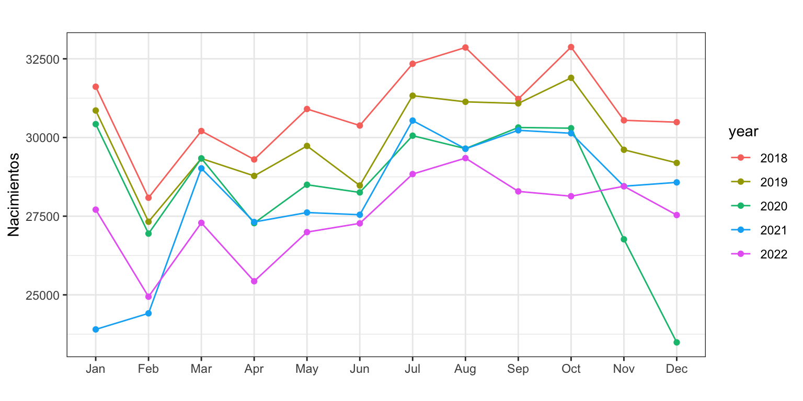
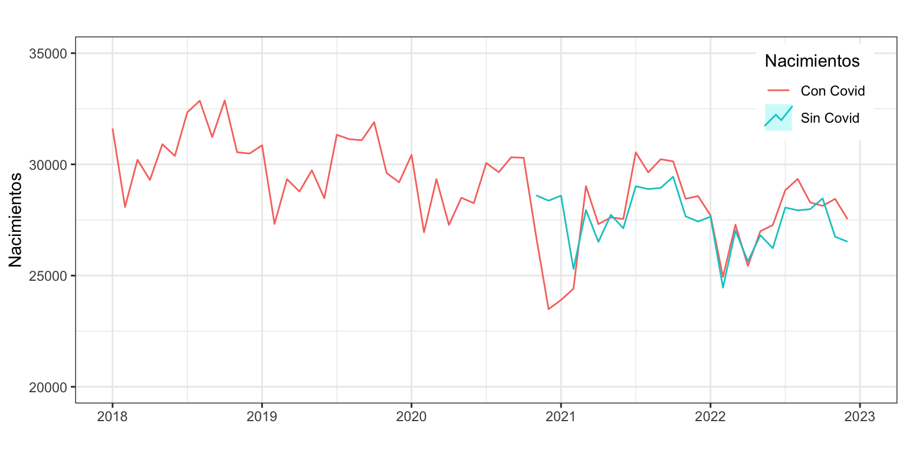
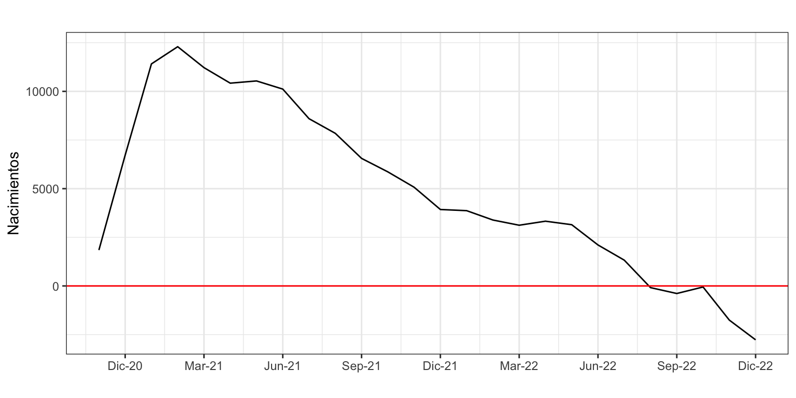

Efecto de la Covid-19 sobre la serie Nacimientos
Previsión con Datos Temporales (GBIA)
Introducción
Existe un amplia y creciente literatura sobre el efecto de la Covid-19 en España en todos los ámbitos posibles: demográfico, laboral, económico, educación, salud… Dentro de la dimensión demográfica, vamos a centrarnos en el impacto de la Covid en la natalidad, concretamente, en el numero de nacimientos mensuales.
Durante 2020 en España se tomaron diferentes medidas de confinamiento que tuvieron un impacto directo sobre las familias, afectaron la tasa de fecundidad y, por tanto, el número de nacimientos. Repasemos brevemente estas medidas:
- En 14 de marzo de 2020 se decreta el estado de alarma y todas las personas deben permanecer confinadas en sus hogares.
- El 2 de mayo empieza el proceso de desconfinamiento, permitiéndose a la gente salir a pasear cerca del domicilio y hacer deporte. Este proceso se inició en momentos diferentes en cada comunidad, dependiendo de una serie de indicadores de gravedad.
- En las semanas sucesivas cada territorio fue relajando las medidas de movilidad entre provincias y de aforo en los locales públicos.
- El 21 de junio finaliza el estado de alarma y se acaban todas las restricciones de movilidad.
Resumiendo, podemos considerar que hubo un periodo duro de confinamiento en marzo y abril, seguido de otro periodo de confinamiento más leve de mayo a junio. Como a efectos del número de nacimientos es necesario esperar nueve meses desde el inicio del confinamiento para ver su impacto, su efecto se empezaría a notar a partir de noviembre de 2020 hasta febrero de 2021.
Por supuesto, hay mucha literatura mucha literatura que analiza el efecto de la Covid sobre la natalidad. Por ejemplo González (2021) estima que en diciembre de 2020 y enero de 2021 hubo un 21% menos de nacimientos de lo esperado; que entre noviembre de 2020 y febrero de 2021 se redujo el número de nacimientos en 13000 sobre lo esperado; y que en marzo de 2021 se volvió a los niveles prepandemia. Por otro lado, Blanes, Domingo, and Esteve (2021) estiman que la caída en diciembre de 2020 y enero de 2021 fue del 20%; que entre noviembre de 2020 y febrero de 2021 la reducción en el número de nacimientos fue de 8000 a 10000 bebés; y que en marzo y abril de 2021 hubo un ligero incremento en el número de nacimientos respecto del año previo. Las discrepancias entre los trabajos pueden deberse a la información de que disponían en el momento de su elaboración, los supuestos asumidos, la metodología empleada, etc.
Pero ¿qué podemos decir nosotros? Con los conocimientos que disponemos de análisis y predicción de series temporales, ¿en cuánto cuantificamos la caída en los nacimientos a finales del año 2020 y principios del 2021? ¿Ha habido un efecto rebote, con un mayor número de concepciones tras el confinamiento? ¿Cuándo volvió el número de nacimientos a los niveles prepandemia?
Que dicen los datos
Como primera aproximación, vamos a ver el número de nacimientos en los años prepandemia, durante el año 2020 y en los años postpandemia. El INE nos da información consolidada sobre el número de nacimientos hasta diciembre de 2020. Para el año 2021 los datos aun son provisionales, y hasta agosto de 2022 muestra estimaciones realizadas con su propia metodología.1
La Figura 1 muestra el número mensual de nacimientos desde 2018 hasta agosto de 2022. Lo primero que se observa es la tendencia decreciente en el número de nacimientos, que viene observándose desde la Gran Recesión. Con independencia del mes, los nacimientos en 2020 son inferiores a los de 2019, y estos inferiores a los de 2018.
En segundo lugar, claramente desde noviembre de 2020 hasta febrero de 2021, el número de nacimientos es muy inferior al esperado. En tercer lugar, desde marzo 2021 el número de nacimientos alcanza una cifra similar a la observada en el mismo mes de 2020. Es decir, si que puede existir un efecto rebote.
nacimientos <- read.csv2("./series/nacimientos extendida.csv",
header = TRUE)
nacimientos <- ts(nacimientos[, 2],
start = 1975,
frequency = 12)
nacimientos <- window(nacimientos,
start = 2000)ggseasonplot(window(nacimientos, start = 2018)) +
ylab("Nacimientos") +
xlab("") +
ggtitle("") +
geom_point()
En cuarto y último lugar, las estimaciones del INE para 2022 parecen apuntar a que el número de nacimientos ya se ha normalizado y está en línea con lo que cabría esperar si no hubiera habido Covid-19.
Pero todas estas afirmaciones son meramente descriptivas y es necesario un análisis más riguroso para poder confirmarlas o descartarlas.
¿Qué hubiera pasado si…?
En los dos epígrafes previos hemos usado constantemente la coletilla respecto de lo esperado: los nacimientos en diciembre de 2020 son inferiores a lo esperado y en marzo de 2021 superiores a lo esperado. Pero ¿qué era lo esperado?
La forma óptima de ver el efecto del confinamiento sobre los nacimientos sería comparar lo que realmente ha ocurrido con lo que hubiera pasado en un hipotético mundo paralelo sin Covid. Pero claro, esto es imposible, solo podemos observar una realidad y en ella la Covid ha ocurrido.
Un forma de construir el mundo hipotético sin Covid es considerar la serie de nacimientos hasta mediados de 2020, ajustarla a un modelo y predecir los siguientes meses (desde finales de 2020 hasta julio de 2022). Podríamos interpretar estas predicciones como los nacimientos que hubieran tenido lugar en un mundo sin Covid, donde todo hubiera discurrido según la inercia de los años previos. Después, podemos comparar los nacimientos reales con las predicciones y responder a nuestra principal pregunta: ¿cómo ha afectado el confinamiento el número de nacidos?
Ajuste a un modelo y predicción
Vamos a considerar la serie de nacimientos desde enero de 2000 hasta octubre de 2020, ajustarla a un modelo ARIMA y predecir hasta agosto de 2022.
El siguiente código estima el mismo modelo visto en el tema de ARIMA con estacionalidad para la serie nacimientos. La única diferencia es que en esta ocasión la serie alcanza hasta septiembre de 2020. El ajuste, con un error porcentual del 1.5% es muy bueno.
nacimientos2 <- window(nacimientos,
end = c(2020, 10))
DiasMes <- monthdays(nacimientos2)
SemanaSanta <- easter(nacimientos2)
d1206 <- 1*(cycle(nacimientos2) == 12 & trunc(time(nacimientos2)) == 2006)
d1210 <- 1*(cycle(nacimientos2) == 12 & trunc(time(nacimientos2)) == 2010)
d0111 <- 1*(cycle(nacimientos2) == 1 & trunc(time(nacimientos2)) == 2011)
d0416 <- 1*(cycle(nacimientos2) == 4 & trunc(time(nacimientos2)) == 2016)
d0616 <- 1*(cycle(nacimientos2) == 6 & trunc(time(nacimientos2)) == 2016)
modelo <- Arima(nacimientos2,
order = c(0, 1, 1),
seasonal = c(0, 1, 1),
lambda = 0,
xreg = cbind(DiasMes, SemanaSanta,
d1206, d1210, d0111, d0416, d0616))
summary(modelo)Series: nacimientos2
Regression with ARIMA(0,1,1)(0,1,1)[12] errors
Box Cox transformation: lambda= 0
Coefficients:
ma1 sma1 DiasMes SemanaSanta d1206 d1210 d0111 d0416
-0.4915 -0.7604 0.0293 -0.0216 -0.0463 0.0616 -0.0559 -0.0511
s.e. 0.0601 0.0451 0.0072 0.0049 0.0157 0.0163 0.0162 0.0166
d0616
0.0281
s.e. 0.0158
sigma^2 = 0.0003878: log likelihood = 595.36
AIC=-1170.73 AICc=-1169.75 BIC=-1136.05
Training set error measures:
ME RMSE MAE MPE MAPE MASE ACF1
Training set -75.88295 699.8042 565.3364 -0.2245479 1.5423 0.4137952 0.02443195Ahora vamos a predecir la serie desde noviembre de 2020 hasta agosto de 2022 (22 meses).
tmp <- ts(rep(0, 22), start = c(2020, 11), freq = 12)
pdm <- monthdays(tmp)
pss <- easter(tmp)
prediccion <- forecast(modelo,
h = 21,
xreg = cbind(pdm, pss, rep(0,22), rep(0,22),
rep(0,22), rep(0,22), rep(0,22)))La Figura 2 muestra la serie original de nacimientos desde 2018 y la predicción. Por la metodología seguida, desde noviembre de 2020 disponemos para cada mes de dos datos: los nacimientos en el mundo real con Covid (observaciones) y los nacimientos en un mundo sin Covid (previsiones).
autoplot(nacimientos,
xlab = "",
ylab = "Bebés",
main = "",
series = "Con Covid") +
xlim(2018, 2023) +
ylim(20000, 35000) +
autolayer(prediccion, series = "Sin Covid", PI = FALSE) +
labs(colour = "Nacimientos") +
theme(legend.position=c(0.9,0.85)) 
Una lectura rápida de la Figura 2 muestra que efectivamente, el número observado de nacimientos entre noviembre de 2020 y febrero de 2021 (en rojo) fue muy inferior a los valores esperados (en azul). Sin embargo, el resto del año 2021 el número de nacimientos fue superior al esperado, apuntando a un ligero efecto rebote. En 2022 el efecto de la pandemia ha desaparecido totalmente. Veamos estas observaciones en detalle.
Efecto del confinamiento sobre los nacimientos
En primer lugar veamos cuál ha sido la caída en el número de nacimientos entre noviembre de 2020 y febrero de 2021.
Con_covid <- as.numeric(window(nacimientos,
start = c(2020, 11),
end = c(2021, 2)))
Sin_covid <- as.numeric(window(prediccion$mean,
start = c(2020, 11),
end = c(2021, 2)))
# Caida porcentual
(Con_covid - Sin_covid)/Con_covid[1] -0.06893514 -0.20764127 -0.19638402 -0.03668175#Caida en el total de nacidos
sum(Con_covid - Sin_covid)[1] -12311.26La mayor caída porcentual en el número de nacimientos tuvo lugar en los meses de diciembre de 2020 y enero de 2021 (20.7% y 19.6%, respectivamente) y nuestras estimaciones coinciden con las aportadas en González (2021) y Blanes, Domingo, and Esteve (2021). Respecto del número de nacimientos, nosotros estimamos una reducción de 12300 nacidos, un valor algo inferior a la estimación en González (2021) y muy superior a la estimación en Blanes, Domingo, and Esteve (2021).
Efecto rebote
Una posibilidad es que el confinamiento no hizo que las parejas decidieran no tener hijos de forma permanente, sino que simplemente retrasó la decisión de tenerlos. Si esto es así, cabria esperar a mediados o finales de 2021 un número de nacimientos superior al esperado: por una lado tendríamos los nacimientos de las parejas que tenían pensado tener hijos en ese momento y por otro los de las parejas que habían retrasado el momento de la maternidad. Si es así, la Covid no habría reducido de forma permanente el número de nacimientos y el acumulado en el medio/largo plazo seria el mismo que si no hubiera habido Covid.
Para poder responder mejor a esta pregunta, vamos a calcular la diferencia acumulada entre el número de nacimientos esperado y el real desde noviembre de 2020 hasta agosto de 2022. La diferencia acumulada crece hasta los 12300 bebés en febrero de 2021. Esta diferencia máxima se va reduciendo lentamente hasta los 4500 bebés en diciembre de 2021. Es decir, efectivamente parece que hay un efecto rebote que ha compensado a lo largo del año 2021 en un total de 7800 bebés la caída hasta febrero de ese año.
Durante el año 2022 la diferencia acumulada ha seguido reduciéndose hasta desaparecer en agosto de 2022. Sin embargo, hay que tener en cuenta que en 2022 estamos comparando las previsiones de nuestro modelo con las estimaciones del INE, así que las conclusiones que obtengamos son muy poco fiables.
Con_covid <- window(nacimientos, start = c(2020, 11))
Sin_covid <- window(prediccion$mean, start = c(2020, 11))
Diferencia <- cumsum(Sin_covid - Con_covid)
Diferencia <- ts(Diferencia,
start = c(2020, 11),
frequency = 12)
autoplot(Diferencia,
xlab = "",
ylab = "Bebés",
main = "") +
xlim(2020.7, 2023) +
scale_x_continuous(breaks= seq(2020 + 11/12, 2022 + 7/12, 2/12),
label = c("Dic-20", "Feb-21", "Abr-21", "Jun-21",
"Ago-21", "Oct-21", "Dic-21", "Feb-22",
"Abr-22", "Jun-22", "Ago-22"))
References
Footnotes
Los datos para los años 2021 y 2022 fueron descargados en noviembre de 2022.↩︎